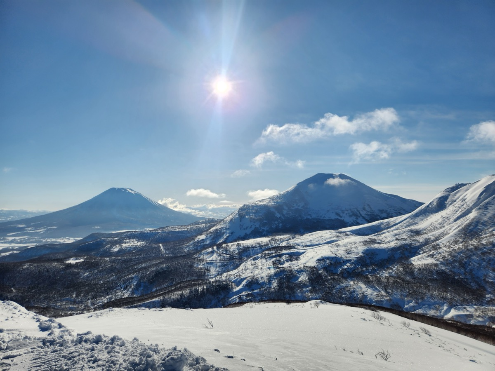
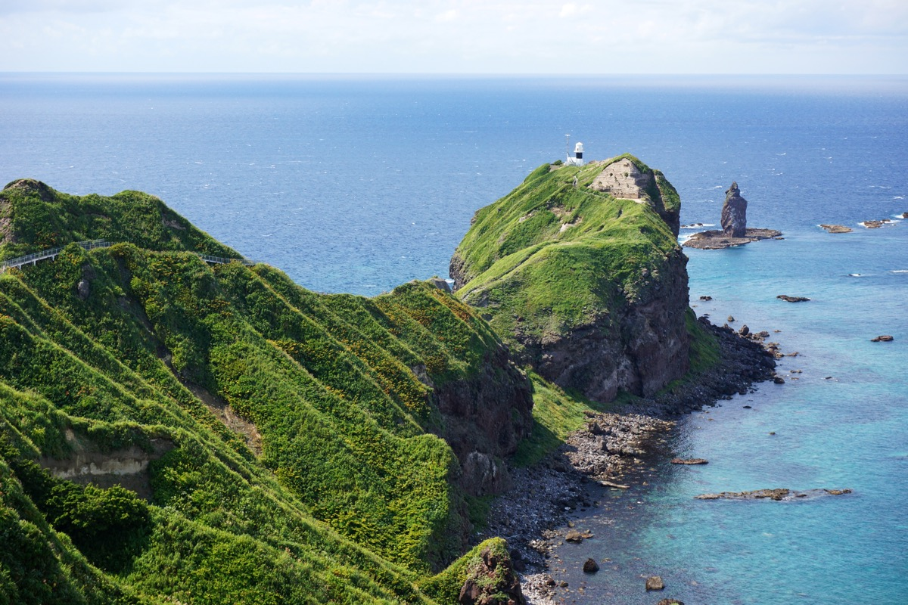
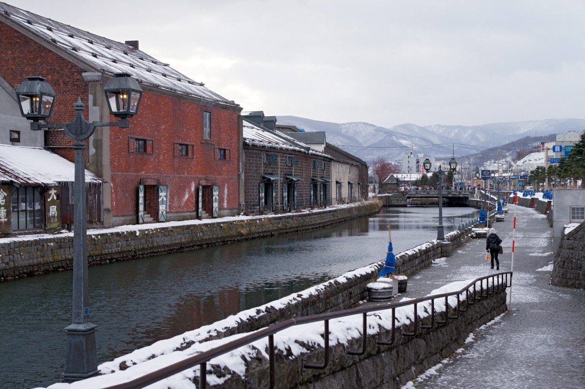
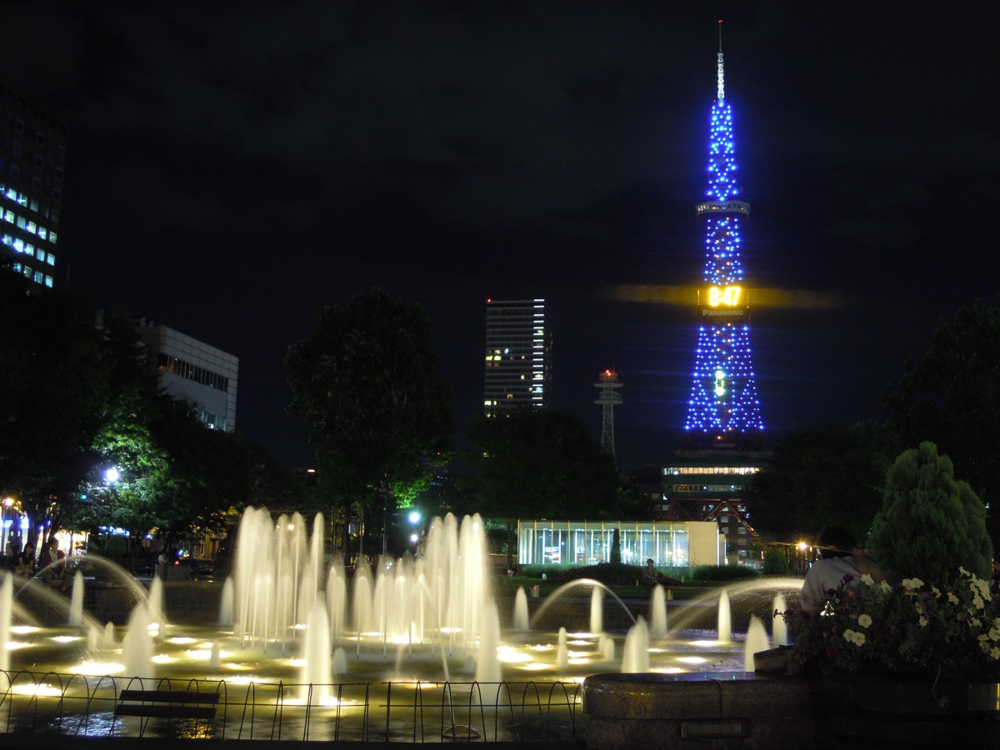
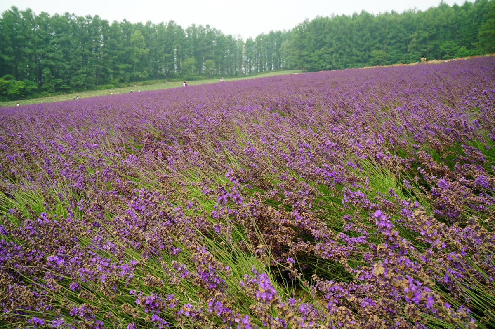
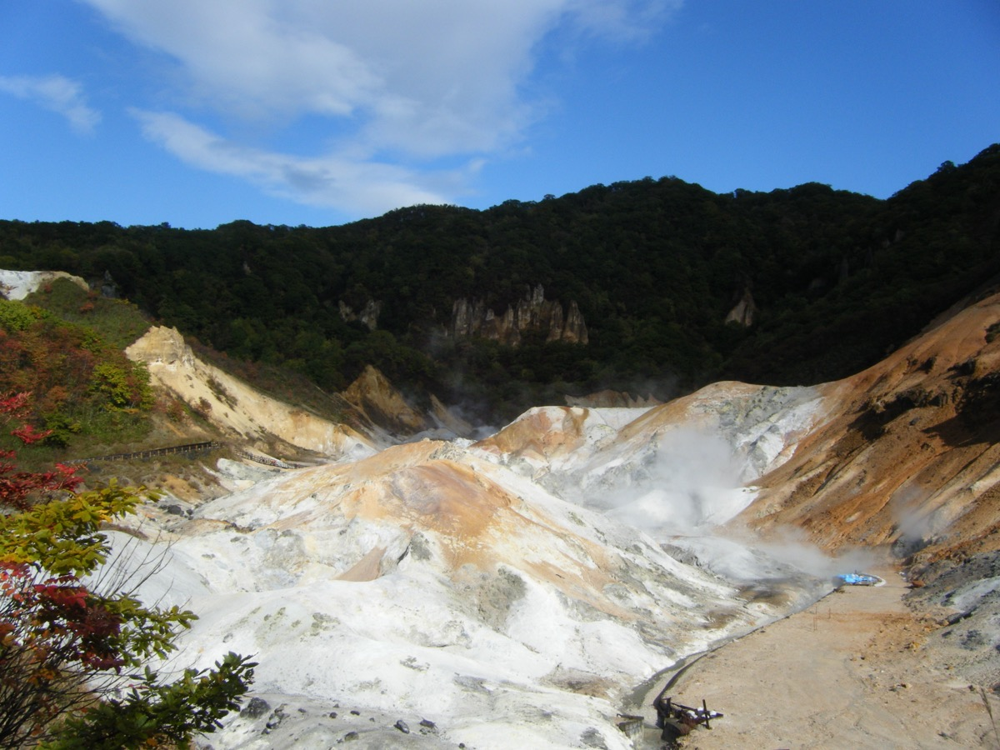
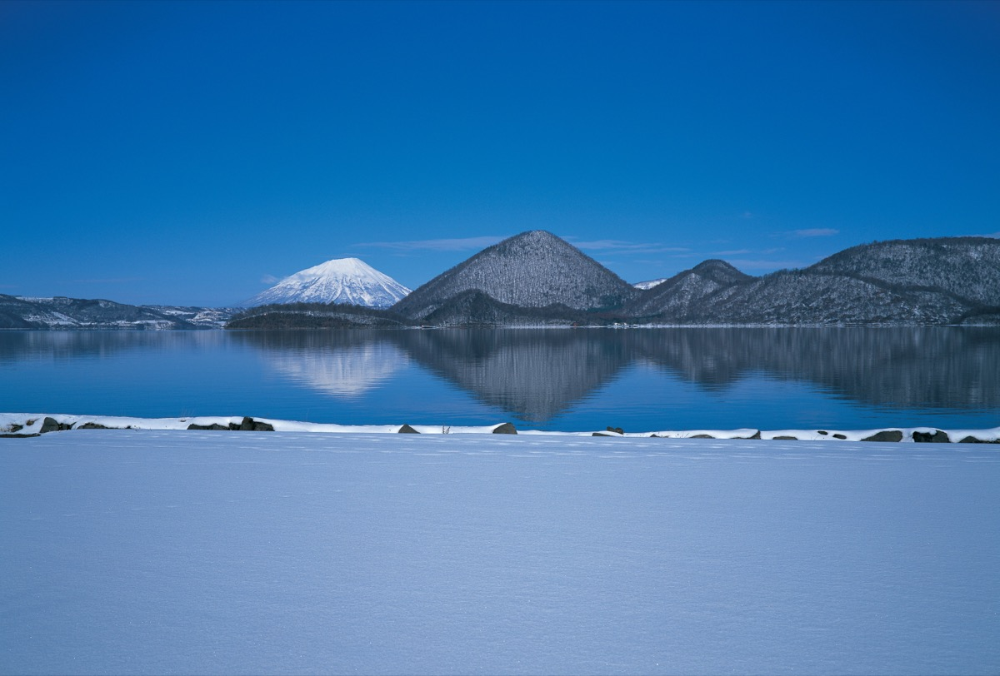
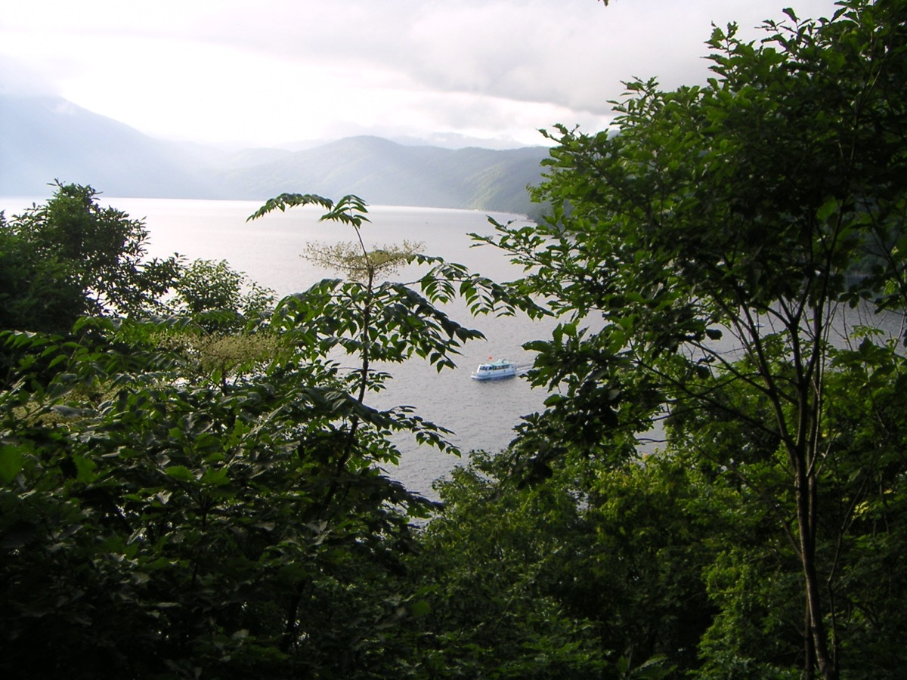

15
Days
Jul 17 – Aug 1
14
Nights
All Hokkaido
9
Regions
Niseko · Shakotan · Furano · Toya
3
Ryokans
KAI Poroto · Hikari no uta · Shikotsu
3
Flights
LAS→HND→CTS · CTS→HND→LAS
11
Stamp Stops
Eki · NP · Attraction
📍 Destinations

Days 1–2
Niseko
Niseko / Mt. Yotei
World-class ski resort reimagined for summer — lush green valleys, Mt. Yotei dominating the skyline, and Asia's largest zipline.
🏨 Park Hyatt Hanazono
🤸 Zipline 110 km/h
🚵 E-bikes
⛳ 18-hole golf
MACH3 zipline: 1.7km side-by-side, book ahead at resort
Shiribetsu River rafting 15 min away — Niseko's best summer activity

Day 3
Shakotan
Cape Kamui
80-meter sea cliffs above "Shakotan Blue" — the most vivid cobalt water in Japan. A narrow clifftop trail leads to the cape tip with dramatic rock pillars.
🌊 Shakotan Blue sea
🦔 Peak uni season
🥾 20-min cliff walk
🍽 Shakotan seafood lunch
Best in morning light — drive from Niseko directly (~1.5 hrs), arrive before noon
Shakotan uni is as good as Rishiri's — grab a bowl at the port before continuing to Otaru

Days 3–4
Otaru
Otaru
19th-century herring port, now Hokkaido's most photogenic town. Arrive evening Day 3, full day Day 4 — glassblowing, Snoopy Village, Music Box Museum, canal.
🪟 TAISHOU glassblowing ★
🐾 Snoopy Village (Canal Plaza)
🎵 Music Box Museum
📮 2 stamps
TAISHOU Glass Museum: book workshop 1–2 months ahead; blow your own glass piece
Snoopy Village is on Canal Plaza 3F — one of only a few locations in Japan

Days 5–7
Sapporo
Sapporo
Hokkaido's capital — 3 full days. Hill of the Buddha, Sapporo Art Park, Shiroi Koibito, ROYCE', then Beer Garden opening day (Jul 23) before driving to Furano.
🍺 Beer Garden Jul 23 OPENING ★★
🎨 Sapporo Art Park
🍫 Shiroi Koibito + ROYCE'
📮 3 stamps
Hill of the Buddha Day 5 — 150k lavender in July bloom + Tadao Ando earthen mound (¥500)
Beer Garden: 9,000 seats, opening day Jul 23; plan to leave by 6–7pm for Furano drive

Days 8–9
Furano
Furano & Biei
Japan's lavender heartland at peak bloom. Arrive evening Day 7. Day 8: Farm Tomita dawn, Lavender East, Shikisai + Ningle Terrace. Day 9: Biei Patchwork Road + Shirogane Blue Pond.
💜 Lavender peak mid-July ✓
💧 Shirogane Blue Pond ★★
🏮 Ningle Terrace evening ★
📮 Farm Tomita notebook ★
Farm Tomita: arrive 6:30am — before tour buses; notebook stamp at gift shop
Biei Patchwork Road Day 9 — Ken & Mary Tree, Seven Stars, no rush

Days 10–11
Noboribetsu
Noboribetsu
Hokkaido's onsen capital with 11 types of mineral springs. 2 nights: Hell Valley boardwalk, Ainu-inspired KAI Poroto ryokan, and full day at Upopoy National Ainu Museum.
🌋 Jigokudani valley
🏩 KAI Poroto ryokan
🏛 Upopoy Museum Day 11 ★★
♨️ Moor spring onsen
Moor spring onsen at KAI Poroto — dark brown organic water, unique in Hokkaido
Upopoy (Day 11): book ¥1,200 ticket in advance; Japan's first national Ainu museum

Days 12–13
Lake Toya
Lake Toya
Perfect circular caldera lake with nightly fireworks. Hikari no uta resort opened 2023 — all rooms with private outdoor baths facing the lake.
🎆 Fireworks 8:45pm nightly
🏩 Hikari no uta ★★
🌋 Mt. Usu ropeway
🚣 Island cruise
~450 fireworks, 20 min, every night late April–October — visible from hotel room
Choose French, kaiseki, or teppanyaki each evening — all Hokkaido ingredients

Day 14
Shikotsu
Lake Shikotsu
One of Japan's clearest caldera lakes, 30 min from CTS. Afternoon stop on the drive from Lake Toya before the final night near the airport.
💧 Japan's clearest lake
🚣 Kayaking / canoe
♨️ Marukoma Onsen (boat access)
✈️ 30 min to CTS
Almost no foreign tourists — a very peaceful final Hokkaido afternoon
📮 Shikotsu-Toya NP visitor center stamp here
📅 Day-by-Day Timeline
Niseko
Otaru
Sapporo
Furano
Noboribetsu
Lake Toya
Shikotsu
FRI
Jul 17
Niseko
Land CTS 7:50am → Niseko
Collect rental car at CTS
Drive ~2hrs to Niseko
Tree Trekking / Zipline ★
Dinner Hirafu Village
Hotel
Park Hyatt Hanazono
Night 1 · ~$500–800
SAT
Jul 18
Niseko
Niseko Full Day
E-bike to Kutchan town
Golf or Rafting ★
Mt. Yotei views
Niki fruit picking option
Hotel
Park Hyatt Hanazono
Night 2 · ~$500–800
SUN
Jul 19
Cape Kamui
Niseko → Cape Kamui (Shakotan) → Otaru overnight
Drive to Shakotan ~1.5hrs
Cliff walk to cape tip ★★
Shakotan Blue sea
Uni lunch at the port ★
Drive to Otaru ~1.5hrs
Canal at golden hour
City
Otaru Hotel
Night 3 · ~$100–150
MON
Jul 20
Otaru → Sapporo
Otaru Full Day: Glassblowing + Snoopy Village + Music Box Museum → Sapporo eve
TAISHOU Glass Museum workshop ★
Snoopy Village (Canal Plaza 3F)
Music Box Museum (Orgel-do)
Kitaichi Glass Oil Lamp Café
📮 Otaru eki-stamp · Canal stamp
City
Sapporo Hotel
Night 4 · ~$150–180
TUE
Jul 21
Sapporo
Sapporo Day 1: Hill of the Buddha + Moerenuma + Art Park + Ramen
Hill of the Buddha 9am ★ (Tadao Ando)
150k lavender in July bloom
Moerenuma Park (Isamu Noguchi) ★
Nijo Market kaisen-don lunch
Sapporo Art Park ★
Ramen Yokocho dinner
📮 Sapporo Station eki-stamp
City
Sapporo Hotel
Night 5 · ~$150–180
WED
Jul 22
Sapporo
Sapporo Day 2: Shiroi Koibito + ROYCE' + Sake Museum
Shiroi Koibito Park ★ (cookie workshop)
📮 Shiroi Koibito stamp
ROYCE' Cacao & Chocolate Town
Hokkaido Univ Botanical Garden
Soup curry dinner (Garaku/Aiiro)
📮 Sapporo Beer Museum stamp
City
Sapporo Hotel
Night 6 · ~$150–180
THU
Jul 23
Sapporo → Furano
Sapporo Day 3: Beer Garden OPENING DAY 🍺 → Drive Furano
Mt. Moiwa ropeway morning ★
🍺 Beer Garden OPENS TODAY ✓✓ ★★
9,000 seats · 12pm–9pm
Zangi · Genghis Khan · Hofbräu Munich
Leave by 6–7pm → Drive Furano ~2hrs
TBD
Furano hotel
Night 7 · ~$100–200
FRI
Jul 24
Furano / Biei
Farm Tomita 6:30am · Lavender East · Shikisai no Oka · Ningle Terrace
Farm Tomita dawn 6:30am ★★
📮 Farm Tomita notebook stamp ★
Lavender East (less crowded)
Shikisai no Oka flower rows ★
📮 Shikisai no Oka stamp
Ningle Terrace evening ★
TBD
Furano hotel
Night 8 · ~$100–200
SAT
Jul 25
Biei / Furano
Biei Patchwork Road · Shirogane Blue Pond ★★
Biei Patchwork Road (30 min drive)
Ken & Mary Tree · Seven Stars Tree
📮 Biei eki-stamp
Melon lunch at Tomita Melon House
Shirogane Blue Pond afternoon ★★
TBD
Furano hotel
Night 9 · ~$100–200
SUN
Jul 26
Noboribetsu
Drive Furano → Noboribetsu · Jigokudani · KAI Poroto Check-in
Drive ~2.5–3hrs (Route 38/274)
Jigokudani Hell Valley ★
Oyunuma Pond + foot bath
KAI Poroto check-in ★ (moor spring onsen)
Ryokan
KAI Poroto
Night 10 · ~$300–500
MON
Jul 27
Noboribetsu
Noboribetsu Full Day: Upopoy Ainu Museum ★★
Upopoy National Ainu Museum 9am ★★
📮 Upopoy Museum stamp
Projection mapping · archery · Mukkuri
Jigokudani Onibi no Michi (illuminated eve)
Moor spring onsen bath
Ryokan
KAI Poroto
Night 11 · ~$300–500
TUE
Jul 28
Lake Toya
Noboribetsu → Lake Toya · Hikari no uta · Mt. Usu · Fireworks
Drive ~45min (Route 37)
Hikari no uta check-in ★★
Mt. Usu Ropeway (active volcano) ★★
Showa Shinzan lava dome
📮 Lake Toya visitor center
Fireworks 8:45pm ★★
Ryokan
Hikari no uta
Night 12 · ~$400–700
WED
Jul 29
Lake Toya
Lake Toya Full Day: Island Cruise + Sculpture Park + Fireworks
Nakajima Island boat cruise ★
Sika deer roam freely
Gurutto Sculpture Park (4km, 58 works)
Canoeing / paddleboarding
Fireworks 8:45pm ★★
Ryokan
Hikari no uta
Night 13 · ~$400–700
THU
Jul 30
Shikotsu → CTS
Lake Toya → Lake Shikotsu afternoon → near CTS
Drive Toya → Shikotsu ~1.5hrs
Kayak on Japan's clearest lake
Marukoma Onsen (boat-access bath)
📮 Shikotsu-Toya NP stamp
Drive to CTS area ~30min
City
Chitose area hotel
Night 14 · ~$100–150
FRI
Jul 31
Fly Home
✈ CTS → HND → LAX → LAS
NH988 CTS→HND Dep 21:40 · Seats 14C/14B
NH106 HND→LAX Dep 00:30 Aug 1 · Seats 21C/21B
UA2315 LAX→LAS Dep 22:59 · Seats 29C/29B
⚠ 60-min HND connection — go straight to intl terminal
⚠ CTS lounge closed at 21:40 — no Priority Pass
Transit
In the air · Arrive LAS Aug 2 12:21am
🎉 Festival & Timing Check
✓
Shakotan sea urchin season
July–August peak — Day 3 (Jul 19) Cape Kamui lunch
★
Sapporo Beer Garden — OPENING DAY ✓✓
Jul 23–Aug 18 — Day 7 (Jul 23) = OPENING DAY ★★
✓
Farm Tomita lavender peak
Mid-July — Day 8 (Jul 24) ✓ peak timing
✓
Ningle Terrace night visit
Year-round until 8:45pm — Day 8 (Jul 24)
✓
Upopoy National Ainu Museum
Year-round — Day 11 (Jul 27); book ¥1,200 ticket ahead
✓
Lake Toya nightly fireworks
Late Apr–Oct nightly 8:45pm — Nights 12–13 (Jul 28–29) ★★
✗
Demon Fireworks (Oni-hanabi)
Thu/Fri 8:30pm — Noboribetsu Nights 10–11 = Sun/Mon ✗
Cannot catch with this schedule — accept miss; Onibi no Michi is the alternative
✗
Hinode Park Illumination
~Jul 12–21 — Furano Days 8–9 = Jul 24–25 ✗ definitively missed
Lavender itself is still at peak ✓
📋 Booking Checklist
KAI Poroto (Hoshino Resorts)
Book now — very popular. hoshinoresorts.com. Jul 26–27, 2 nights.
OTARU TAISHOU GLASS MUSEUM workshop
Glassblowing workshop — reserve 1–2 months ahead. Day 4 (Jul 20 morning). ~60–90 min.
Park Hyatt Niseko Hanazono
3–6 months ahead. hyatt.com or Amex FHR. Jul 17–18, 2 nights.
Hikari no uta (Lake Toya)
3–5 months ahead. hikarino-uta.com. Jul 28–29, 2 nights.
Rental car at CTS
3+ months ahead. OTS or Toyota Rent-a-Car. Jul 17–30 (14 days).
Upopoy Museum (advance ticket)
¥1,200 — book online before trip. Day 11 (Jul 27).
🏨 Accommodations
Nts 1–2
Jul 17–18
Jul 17–18
Park Hyatt Niseko Hanazono
Niseko · Luxury hotel
~$500–800
Nt 3
Jul 19
Jul 19
Otaru Hotel (near canal)
Otaru · City inn
$100–150
Nts 4–6
Jul 20–22
Jul 20–22
Royal Park Canvas / Tokyu Stay
Sapporo · City hotel (3 nights)
$150–180
Nts 7–9
Jul 23–25
Jul 23–25
Furano hotel (3 nights)
Furano · Guesthouse / local hotel
$100–200
Nts 10–11
Jul 26–27
Jul 26–27
Hoshino KAI Poroto ★
Noboribetsu · Ryokan w/ meals (2 nights)
~$300–500
Nts 12–13
Jul 28–29
Jul 28–29
Hikari no uta ★★
Lake Toya · Resort w/ meals (2 nights)
~$400–700
Nt 14
Jul 30
Jul 30
Chitose area hotel
Near CTS · Final night
$100–150
✈️ Flights
Outbound
LAS → SFO → HND → CTS
UA2615 Jul 15 21:10 · NH107 Jul 16 01:40 · NH987 Jul 17 06:20
Arrive CTS Jul 17 7:50am · Seats 29B/29C · 30C/30A · 16A/16C Confirmed ✓
Arrive CTS Jul 17 7:50am · Seats 29B/29C · 30C/30A · 16A/16C Confirmed ✓
Return
CTS → HND → LAX → LAS
NH988 Jul 31 21:40 · NH106 Aug 1 00:30 · UA2315 Aug 1 22:59
Arrive LAS Aug 2 12:21am · Seats 14C/14B · 21C/21B · 29C/29B
⚠ 60-min HND connection — ANA itinerary Confirmed ✓
Arrive LAS Aug 2 12:21am · Seats 14C/14B · 21C/21B · 29C/29B
⚠ 60-min HND connection — ANA itinerary Confirmed ✓
📮 Stamp Collecting — 11 Stops
Day 4 · Jul 20
Otaru Station
Eki みどりの窓口
Classic harbor/canal design
Day 4 · Jul 20
Otaru Canal Tourist Info
Attraction
Canal + warehouse motif
Day 5 · Jul 21
Sapporo Station
Eki みどりの窓口
Pick up Day 5 evening after Sapporo Art Park
Day 6 · Jul 22
Shiroi Koibito Park
Attraction
Cookie/factory motif; ¥800 entry
Day 6 · Jul 22
Sapporo Beer Museum
Attraction
Hop/barrel motif; free; quick evening stop
Day 8 · Jul 24
Farm Tomita ★
Attraction
Decades-old notebook stamp — ask at gift shop
Day 8 · Jul 24
Shikisai no Oka
Attraction
Flower field panorama; main building
Day 9 · Jul 25
Biei Station
Eki
En route to Patchwork Road or Blue Pond; みどりの窓口
Day 11 · Jul 27
Upopoy National Ainu Museum
NP Ainu cultural motif
Entrance area; reserve tickets (¥1,200)
Day 12 · Jul 28
Lake Toya Visitor Center
NP Shikotsu-Toya National Park
Caldera lake + Showa Shinzan motif
Day 14 · Jul 30
Lake Shikotsu Visitor Center
NP Shikotsu-Toya National Park
Clear caldera lake motif
💴 Trip Cost Breakdown
| Item | Details | Cost (USD) |
|---|---|---|
| Confirmed Bookings | ||
Flights Confirmed LAS→SFO→HND→CTS · CTS→HND→LAX→LAS · 2 travelers |
UA2615 + NH107 + NH987 · NH988 + NH106 + UA2315 |
$3,159.66 |
Park Hyatt Niseko Hanazono Confirmed Jul 17–19 · 2 nights · 2 guests |
Hanazono, Niseko · Room + tax |
$1,590.03 |
Confirmed subtotal |
$4,749.69 | |
| Estimated / To Book | ||
KAI Poroto Estimate Jul 26–28 · 2 nights · 2 guests · w/ meals |
Noboribetsu · hoshinoresorts.com |
~$800 |
Hikari no uta Estimate Jul 28–30 · 2 nights · 2 guests · w/ meals |
Lake Toya · hikarino-uta.com |
~$1,100 |
Rental Car Estimate Jul 17–30 · 14 days · compact/mid-size |
CTS · OTS or Toyota Rent-a-Car |
~$840 |
Sapporo Hotel Estimate Jul 20–23 · 3 nights · 2 guests |
Royal Park Canvas or Tokyu Stay |
~$480 |
Furano Hotel Estimate Jul 23–26 · 3 nights · 2 guests |
Furano · Local hotel / guesthouse |
~$450 |
Otaru Hotel Estimate Jul 19 · 1 night · 2 guests |
Near Otaru Canal |
~$130 |
Chitose Hotel Estimate Jul 30 · 1 night · 2 guests |
Near CTS airport · final night |
~$120 |
Estimated Trip Total Confirmed + all estimates above · excludes food, activities, incidentals |
~$9,670 | |